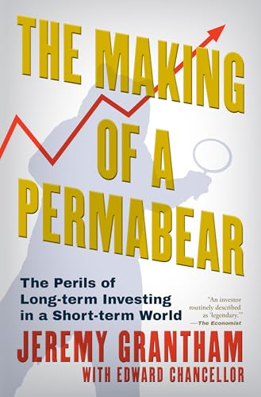

《永久空头的养成》（The Making of a Permabear: The Perils of Long-term Investing in a Short-term World）于2026年1月由Atlantic Monthly Press出版，是资产管理公司GMO联合创始人杰里米·格兰瑟姆（Jeremy Grantham)对自己六十年投资生涯的回顾，由《金融投机史》《时间的代价》的作者、金融史学家爱德华·钱塞勒（Edward Chancellor）与其合作写成。格兰瑟姆是当代最著名的泡沫研究者与逆向投资者，《经济学人》称他是"一位常被冠以'传奇'之名的投资者"，他的季度致投资者信在金融行业内外拥有大批忠实读者。
书中追溯了格兰瑟姆从二十世纪六十年代入行以来的完整轨迹。他带着贵格会的价值观与约克郡人的独立性格进入投资行业，早年便投身股票市场历史研究，参与构建了最早的小盘股指数与价值股指数；他联合创办的GMO把公司早期的盈利花在了一台"洗衣机大小"的硬盘上，成为最早用计算机做投资分析的机构之一，开创了后来席卷整个行业的量化投资风格。而真正让他名声大噪的，是九十年代末那场代价高昂的坚持：他拒绝参与互联网狂热，被市场讥为"永久空头"（permabear），客户成批撤资离去——直到2000年泡沫破裂，他的判断得到彻底印证。这段经历构成了书名的由来，也是全书最核心的张力：在一个以季度为单位考核的行业里，坚持均值回归与长期主义要付出怎样的代价。
本书出版后获得了颇具分量的评价。《华尔街日报》书评人、《格兰特利率观察家》创办人詹姆斯·格兰特（James Grant）写道："市场正在做的事，与按作者之见市场应当做的事，两者之间的张力，会让有心投资的读者一页页读完这些聪明而晓畅的篇章。"（"The tension between what the market is doing and what, by the author's lights, it ought to be doing, will keep investment-minded readers turning these smart and accessible pages."）彭博专栏作家梅琳·萨默塞特·韦布（Merryn Somerset Webb）的评价则是"从头到尾引人入胜"（"Fascinating from beginning to end."）。
对关注投资与商业的读者而言，这本书的价值在于它是第一手的历史：格兰瑟姆亲历了战后几乎每一轮大泡沫的形成与破灭，而他应对泡沫的框架——相信价格终将向长期均值回归、警惕"这次不一样"的叙事——在书中通过具体的成败案例展开，而非抽象说教。书的后半部分还记录了他晚年的转向：对短期主义的忧虑从市场延伸到地球本身，他已将几乎全部财富投入环境保护事业，其格兰瑟姆基金会长期资助气候研究。一个以"看空"闻名的人，最终把最大的一笔多头仓位押在了人类的长期未来上——这种反差为这部回忆录增添了超出投资范畴的分量。